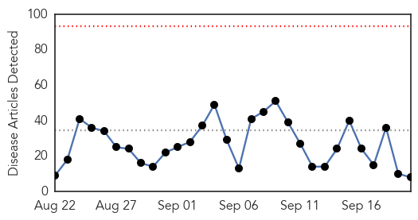
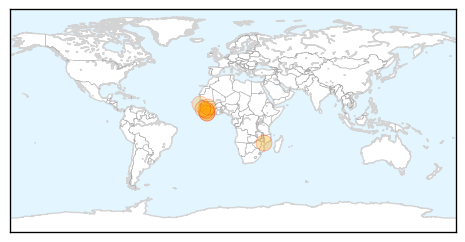

30 Day Trends
Web: 0 alerts, 0 warnings
Twitter: 0 alerts, 0 warnings
Top Articles:
- 1.000
- Liberia confirms third Ebola case in new outbreak
- 0.989
- Bungling by UN agency hurt Ebola response
- 0.989
- More Needs to Be Done in Fighting Malaria CDC Chief Says
- 0.974
- 10 critical mistakes in last year's Ebola outbreak
- 0.965
- Let’s work together to prevent epidemics
- 0.925
- For 2nd year, Ebola-hit Guinea’s Muslims barred from Hajj
- 0.880
- ETU Workers Protest over Benefits
- 0.732
- First Tourist Arrivals Ahead Of Tourism Season
Top Tweets:
- 0.981
- Ebola, a big public health issue - GhanaWeb http://t.co/zCqRPuuhyE ebola EVD
- 0.922
- Ebola, a big public health issue – GHS - Ghana Business News http://t.co/SogZxfvaEB ebola EVD
- 0.876
- AP Investigation: Bungling by UN agency hurt Ebola response - Hutchinson News http://t.co/t4yXMJylVR ebola EVD
- 0.751
- Ebola, a big public health issue - GhanaWeb http://t.co/eWvLmDVPZN
- 0.514
- RT: Ebola testing continues in Sierra Leone despite heavy rains and flooding. @PHE_uk http://t.co/Bjs4tpcUQ9
Web/News Articles
Tweets

Article Locations
Article Confidences